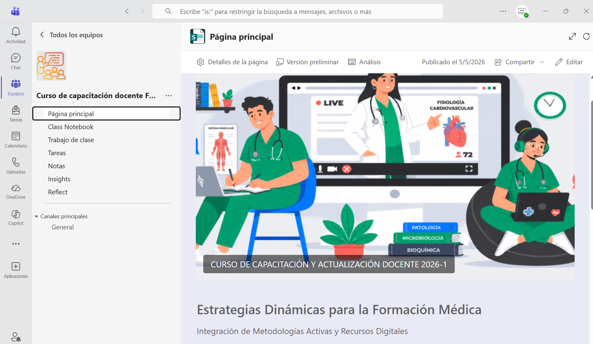

← Actividades académicas · Expediente 03/07
Metodologías Activas
Curso de Capacitación y Actualización Docente 2026-1 «Estrategias Dinámicas para la Formación Médica: Integración de Metodologías Activas y Recursos Digitales».
- Tipo
- Curso de capacitación
- Modalidad
- Presentación + aula virtual
- Plataforma
- Microsoft Teams
- Año
- 2026
Planeación
El diseño instruccional del curso está documentado en su planeación didáctica:
Difusión

Implementación
Presentación y aula virtual en Microsoft Teams.

Recursos educativos
Materiales producidos para el curso: